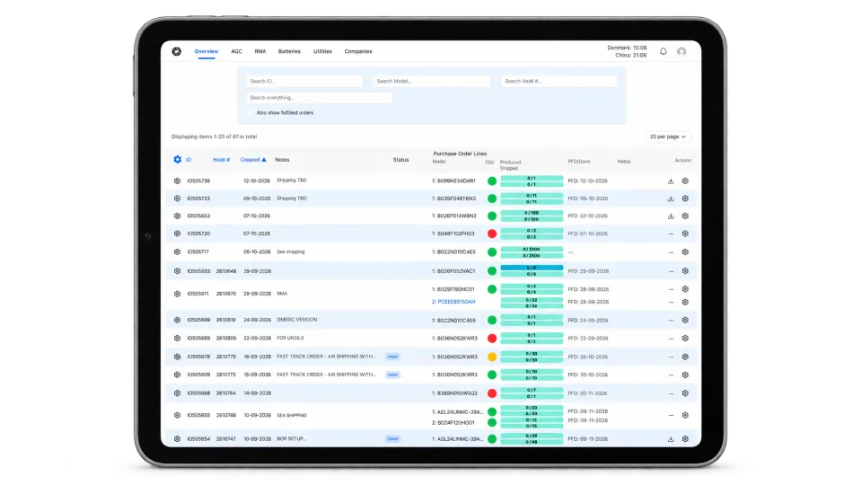

Back to production
Production · FLOW
Controlled production flow.
A defined sequence of work instructions, component lot tracking and in-process checks.
Controlled production flow
A defined sequence of work instructions, component lot tracking and in-process checks, so any batch can be traced back to the components and the station that built it.

Ready to scope your production volumes?
Tell us the application, the target volume and the timeline. We will help scope the right manufacturing path, from first article to stable series output.